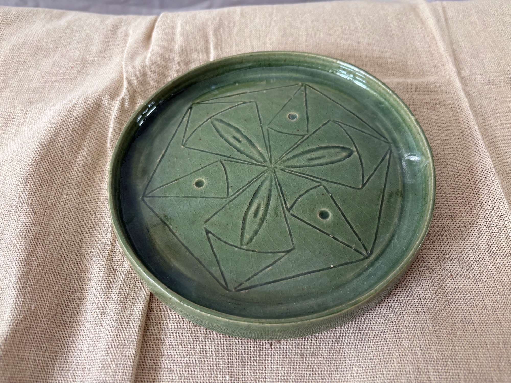
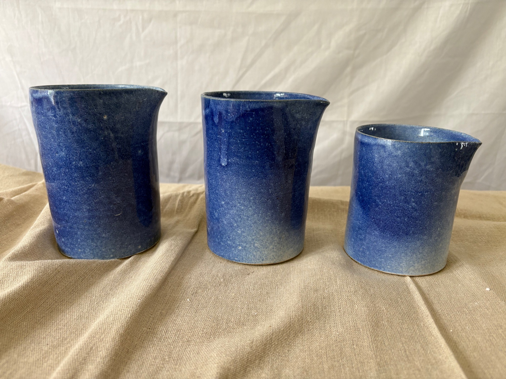
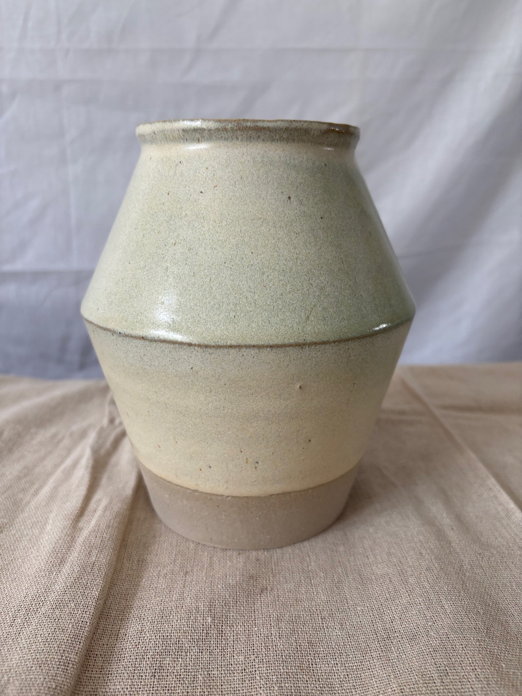

Latest from the studio
Gallery
A working archive of useful pots, carved plates, glaze tests, and table pieces from The Honest Potter studio.
0 pieces
0 groups



Latest from the studio
A working archive of useful pots, carved plates, glaze tests, and table pieces from The Honest Potter studio.


